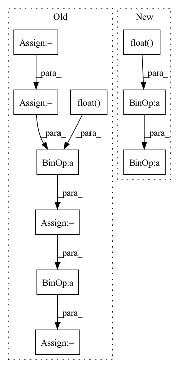

Pattern ID :2433

Before Change
Returns:
loss: An average loss value masked by the length.
input = input.contiguous()
target = target.contiguous()
// logits_flat: (batch * max_len, dim)
input = input.view(-1, input.shape[-1])
// target_flat: (batch * max_len, dim)
target_flat = target.view(-1, target.shape[-1])
// losses_flat: (batch * max_len, dim)
losses_flat = functional.mse_loss(
input, target_flat, size_average=False, reduce=False)
// losses: (batch, max_len, dim)
losses = losses_flat.view(*target.size())
// mask: (batch, max_len, 1)
mask = sequence_mask(
sequence_length=length, max_len=target.size(1)).unsqueeze(2)
losses = losses * mask.float()
loss = losses.sum() / (length.float().sum() * float(target.shape[2]))
return loss
After Change
loss: An average loss value masked by the length.
// mask: (batch, max_len, 1)
mask = sequence_mask(
sequence_length=length, max_len=target.size(1)).unsqueeze(2).float()
mask = mask.expand_as(input)
loss = functional.mse_loss(
input * mask, target * mask, reduction="sum")
loss = loss / mask.sum()
return loss
In pattern: SUPERPATTERN
Frequency: 3
Non-data size: 10
Instances
Fragment ID: 14602448
Project Name: coqui-ai/tts
Commit Name: 4326582bb1e68480ef79a02abbf4bfacc3aadede
Time: 2019-03-06
Author: egolge@mozilla.com
File Name: layers/losses.py
M Class Name: MSELossMasked
N Class Name: MSELossMasked
M Method Name: forward(4)
N Method Name: forward(4)
M Parent Class: nn.Module
N Parent Class: nn.Module
M File Name: layers/losses.py
N File Name: layers/losses.py
M Start Line: 53
M End Line: 70
N Start Line: 54
N End Line: 59
'>
Before Change
target = target.contiguous()
// logits_flat: (batch * max_len, dim)
input = input.view(-1, input.shape[-1])
// target_flat: (batch * max_len, dim)
target_flat = target.view(-1, target.shape[-1])
// losses_flat: (batch * max_len, dim)
losses_flat = functional.l1_loss(
input, target_flat, size_average=False, reduce=False)
// losses: (batch, max_len, dim)
losses = losses_flat.view(*target.size())
// mask: (batch, max_len, 1)
mask = sequence_mask(
sequence_length=length, max_len=target.size(1)).unsqueeze(2)
losses = losses * mask.float()
loss = losses.sum() / (length.float().sum() * float(target.shape[2]))
return loss
After Change
loss: An average loss value masked by the length.
// mask: (batch, max_len, 1)
mask = sequence_mask(
sequence_length=length, max_len=target.size(1)).unsqueeze(2).float()
mask = mask.expand_as(input)
loss = functional.l1_loss(
input * mask, target * mask, reduction="sum")
loss = loss / mask.sum()
return loss
'>
Fragment ID: 14602398
Project Name: coqui-ai/tts
Commit Name: a15b3ec9a18377bf67356a9b5c29f4b767001d05
Time: 2018-08-13
Author: erengolge@gmail.com
File Name: layers/losses.py
M Class Name: L1LossMasked
N Class Name: L1LossMasked
M Method Name: forward(4)
N Method Name: forward(4)
M Parent Class: nn.Module
N Parent Class: nn.Module
M File Name: layers/losses.py
N File Name: layers/losses.py
M Start Line: 25
M End Line: 42
N Start Line: 26
N End Line: 31
'>
Before Change
dists = cdist(anchor, positive, metric=self.metric)
// add 10 to false negative
dist_keypts = np.eye(dist_keypts.shape[0]) * 10 + dist_keypts.detach().cpu().numpy()
add_matrix = torch.zeros_like(dists)
add_matrix[np.where(dist_keypts < self.safe_radius)] += 10
dists = dists + add_matrix
pos_mask = torch.eq(torch.unsqueeze(pids, dim=1), torch.unsqueeze(pids, dim=0))
neg_mask = torch.logical_not(pos_mask)
// dists * pos_mask get the distance of each valid anchor-positive pair.
furthest_positive, _ = torch.max(dists * pos_mask.float(), dim=1)
// here we use "dists + 10000*pos_mask" to avoid the anchor-positive pair been selected.
closest_negative, _ = torch.min(dists + 1e5 * pos_mask.float(), dim=1)
// closest_negative_row, _ = torch.min(dists + 1e5 * pos_mask.float(), dim=0)
// closest_negative = torch.min(closest_negative_col, closest_negative_row)
average_negative = (torch.sum(dists, dim=-1) - furthest_positive) / (dists.shape[0] - 1)
diff = furthest_positive - closest_negative
accuracy = (diff < 0).sum() * 100.0 / diff.shape[0]
pos = dists - 1e5 * neg_mask.float()
pos_weight = (pos - self.pos_margin).detach()
pos_weight = torch.max(torch.zeros_like(pos_weight), pos_weight)
lse_positive = torch.logsumexp(self.log_scale * (pos - self.pos_margin) * pos_weight, dim=-1)
neg = dists + 1e5 * pos_mask.float()
neg_weight = (self.neg_margin - neg).detach()
neg_weight = torch.max(torch.zeros_like(neg_weight), neg_weight)
lse_negative = torch.logsumexp(self.log_scale * (self.neg_margin - neg) * neg_weight, dim=-1)
After Change
pos_weight = torch.max(torch.zeros_like(pos_weight), pos_weight)
lse_positive = torch.logsumexp(-self.log_scale * (pos - self.pos_margin) * pos_weight, dim=-1)
neg = dists - 1e5 * (~neg_mask).float()
neg_weight = (neg - self.neg_optimal).detach()
neg_weight = torch.max(torch.zeros_like(neg_weight), neg_weight)
lse_negative = torch.logsumexp(self.log_scale * (neg - self.neg_margin) * neg_weight, dim=-1)
'>
Fragment ID: 14602436
Project Name: xuyangbai/d3feat.pytorch
Commit Name: f19b93196387b22f1cb416f9a0214b2cffaf8e5e
Time: 2020-07-16
Author: 653823597@qq.com
File Name: utils/loss.py
M Class Name: CircleLoss
N Class Name: CircleLoss
M Method Name: forward(4)
N Method Name: forward(4)
M Parent Class: nn.Module
N Parent Class: nn.Module
M File Name: utils/loss.py
N File Name: utils/loss.py
M Start Line: 123
M End Line: 152
N Start Line: 125
N End Line: 157